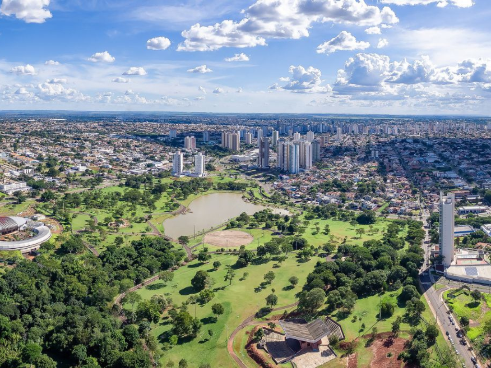

O Mato Grosso do Sul (MS), localizado no Centro-Oeste brasileiro, destaca-se nacionalmente pela força do agronegócio e por abrigar ecossistemas únicos. Criado oficialmente em 1979, possui mais de 2,7 milhões de habitantes, divididos em 79 municípios, e tem como capital a arborizada e moderna cidade de Campo Grande.
